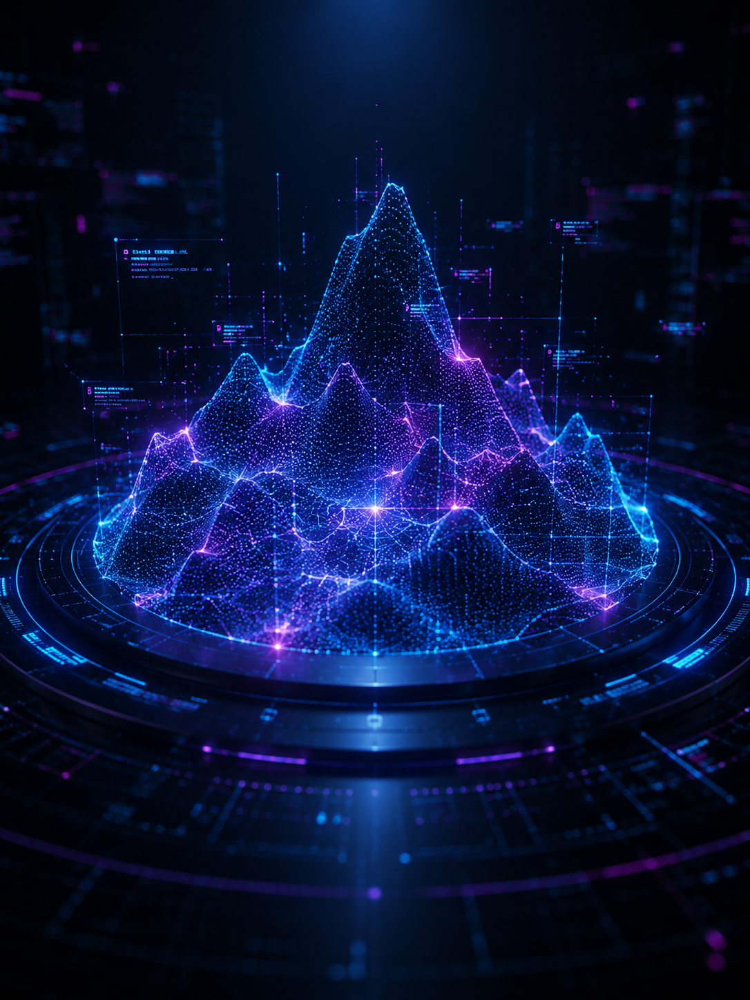
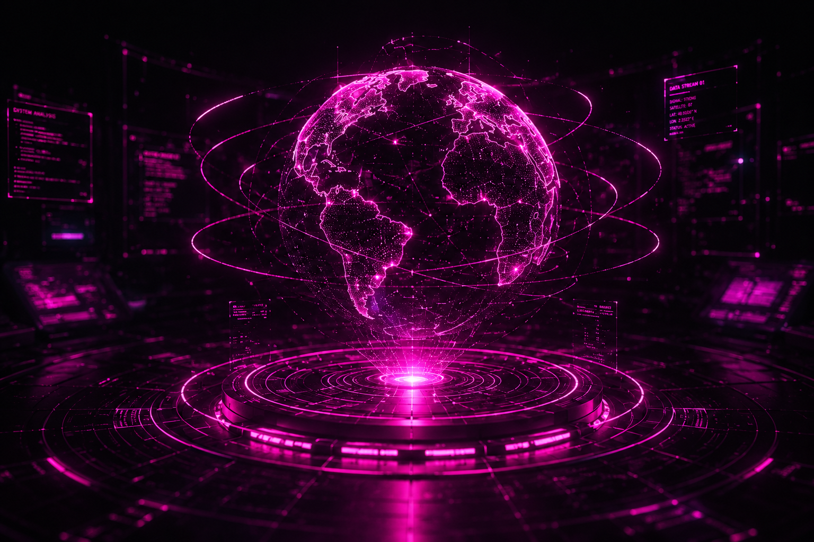
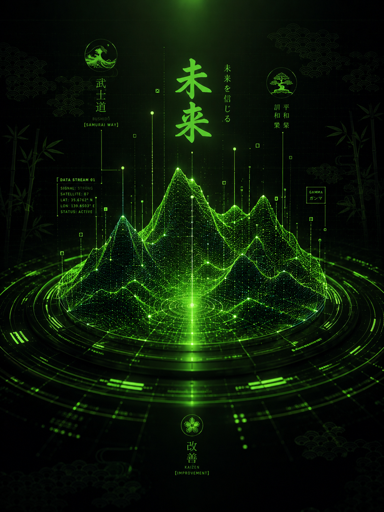

Profile ID
DX-042
Darren
Developer focused on immersive frontend, UI precision and controlled cyberpunk motion.
I create responsive web interfaces
with strong visual direction,
clean layouts, SVG systems and interactive motion.
Developer focused on immersive frontend, UI precision and controlled cyberpunk motion.
/// loading stack from archives...
Portfolio concept for a developer who creates precise interfaces, responsive websites, visual systems and motion-driven user experiences.
back-end runtime
design ui/ux
web builder
/// mapping interface production...from design signal to live deployment.
I start by defining the interface direction in Figma: structure, user flow, visual rhythm, component states and responsive behavior before moving into code.
I choose the stack around the project goal, then build the interface with clean HTML, CSS and JavaScript logic, keeping motion, layout and performance under control.
After final testing, I prepare the website for hosting, publish the live version, and keep the project ready for updates, fixes and future improvements.
/// accessing deployments...classified builds and experimental protocols loaded.
select a node to proceed.

⁄ ⁄ ⁄ 01 node active

⁄ ⁄ ⁄ 02 node active

⁄ ⁄ ⁄ 03 node active
⁄ ⁄ ⁄ 01 node active
/// DATASTREAM ACTIVE

Status
DeployedAccess Level
PublicDeveloped a precise, appealing, and easy to use subsea solutions web interface for a real
client.
API Mail implementation which currently work with Resend (API
Mail
provider).
The client wanted to have clear sections with a clear purpose, either demonstrate the
product or show
testimonials.
/// establish secure connection...waiting for input.